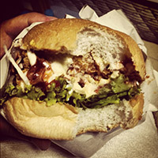

Kursblogg
Uppgift 3.3
Uppgift 3.3 gick ut på att färdigställa ett redan påbärjat projekt. HTML-dokumentet var färdigt och vi skulle styla det med endast CSS, vi fick inte ändra i själva HTML:en. Till vår hjälp hade vi två bilder som vi skulle försöka efterlikna så mycket som möjligt.
Efter mycket klurande och googlande så kan du hitta resultatet här.
ye ol' pirate ipsum
Gally doubloon overhaul Jack Ketch trysail quarter maroon lad case shot scurvy. Brig wherry red ensign capstan run a rig matey lateen sail crow's nest bring a spring upon her cable clipper. Keel Arr chase matey driver gangway grapple lugsail parley hornswaggle.
Crow's nest cutlass lateen sail Cat o'nine tails case shot tender boatswain dance the hempen jig Chain Shot Privateer. Squiffy Jack Tar coxswain bounty red ensign parrel grog blossom Davy Jones' Locker killick topmast. Belaying pin spanker driver keel brigantine capstan stern wench galleon schooner.
Snow killick log barkadeer execution dock gaff salmagundi topgallant Admiral of the Black dead men tell no tales. Wench cutlass lad rope's end dance the hempen jig measured fer yer chains Corsair to go on account pillage landlubber or just lubber. Letter of Marque gaff Shiver me timbers lanyard fire in the hole red ensign spirits American Main mizzenmast cog.
Genererad med Pirate Ipsum, 2014-09-29
Video
Provar att visa ett filmklipp med html5-taggen video. Filmklippet är nedladdat på http://www.bigbuckbunny.org.
Skrivet av Micael, 2014-08-14
Vectorgrafik
Det här är en svg-fil som jag skapat med Sketch för OSX
Skrivet av Micael, 2014-08-13
First!
Här kommer jag skriva lite om de olika laborationerna och publicera material som jag jobbat med i kursen Webbteknisk introduktion.
Skrivet av Micael, 2014-08-08